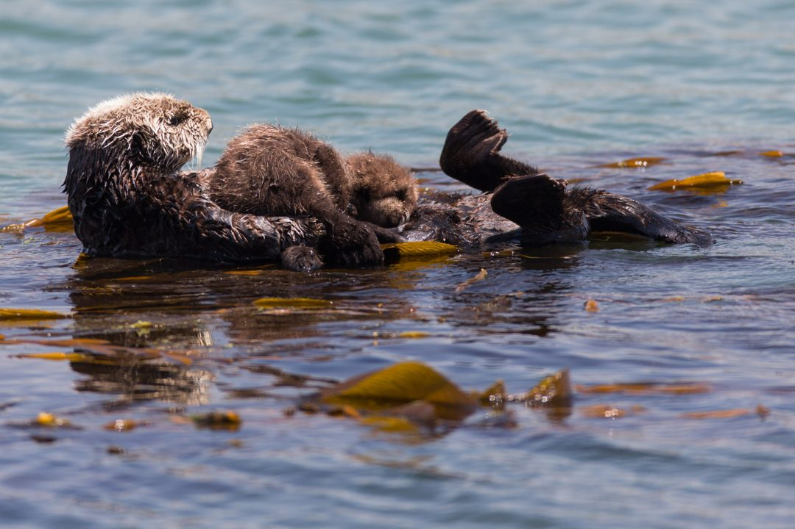
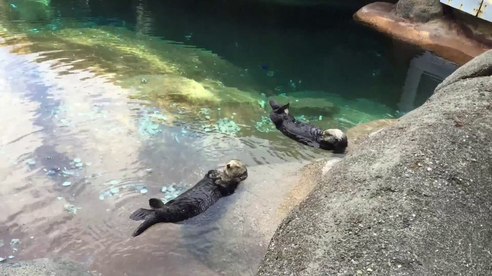
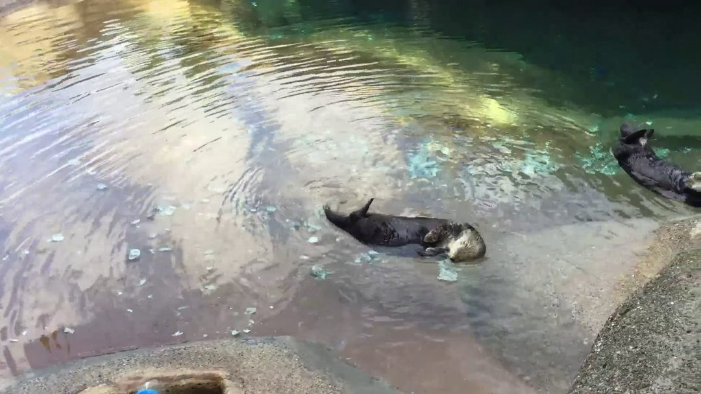
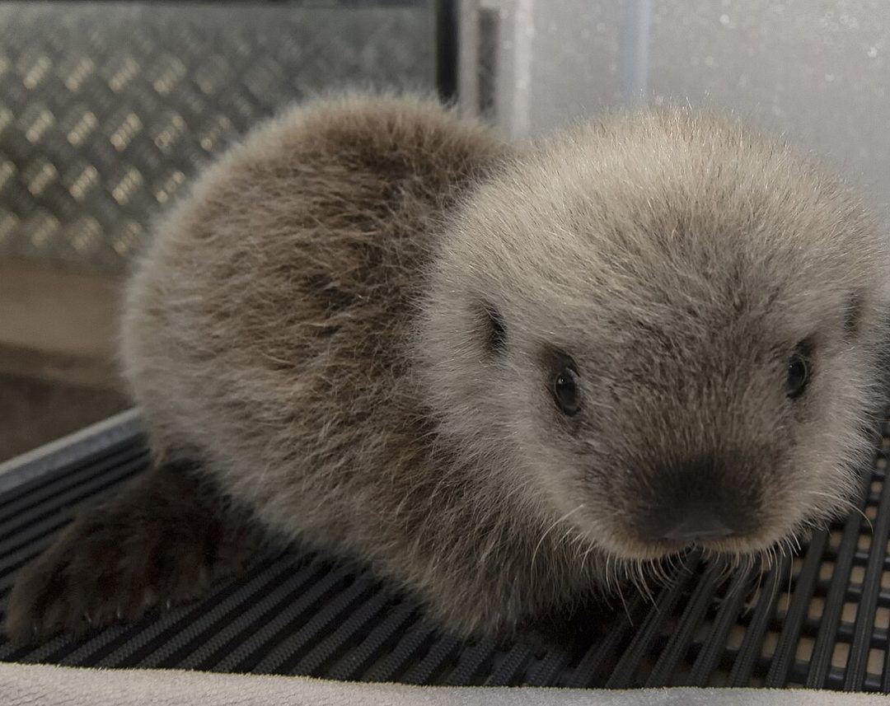
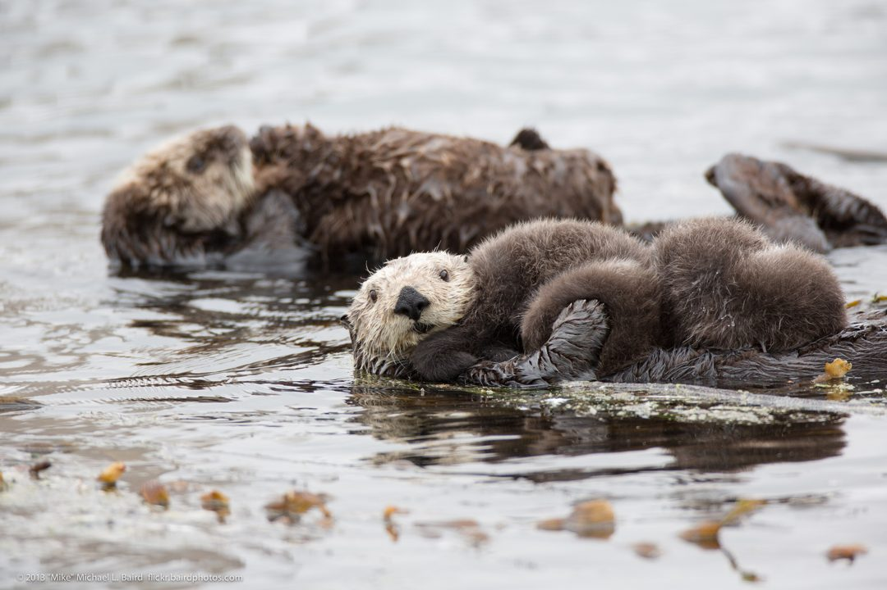
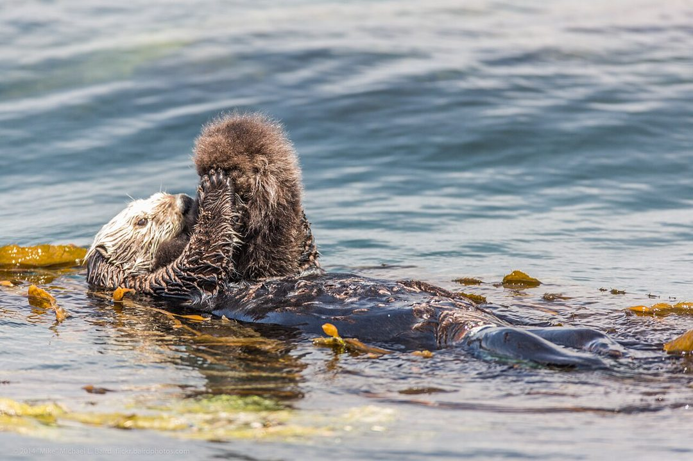
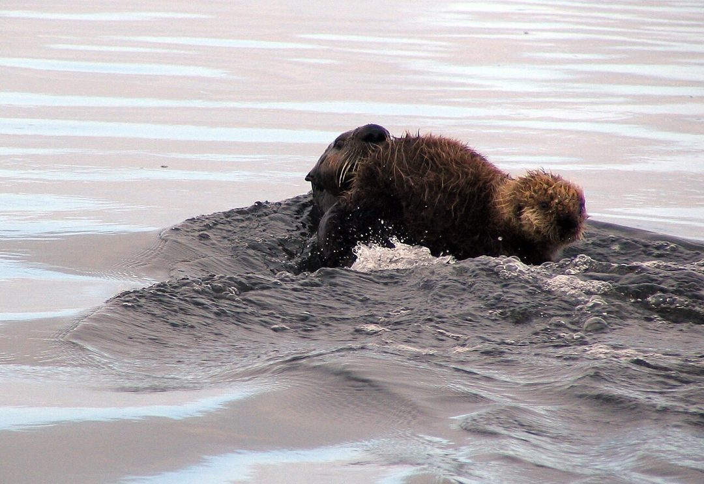
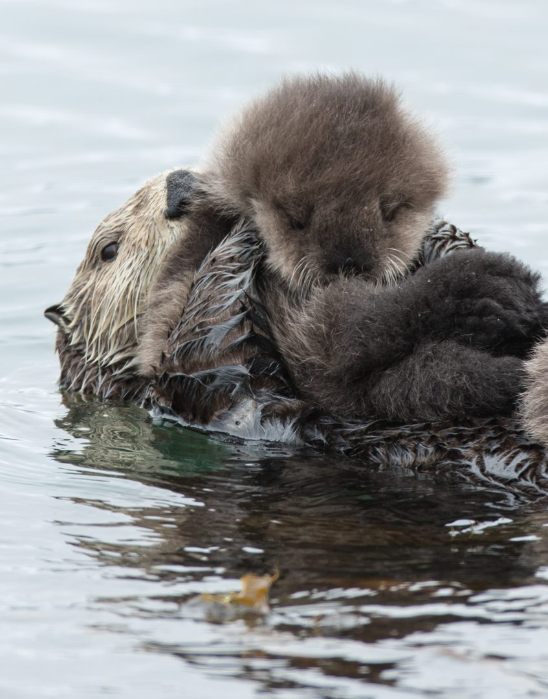

She raised 13 baby otters
She raised 13 baby otters.
None of them were hers.


She couldn’t go back to the sea.


So she taught them to be otters.




Some moms aren’t the ones who gave birth.

Based on a true story: Toola the sea otter. Real otters shown, not Toola. Photos: Mike Baird (CC BY 2.0), USFWS (public domain); tank video frames: Parker Knight (CC BY 2.0).